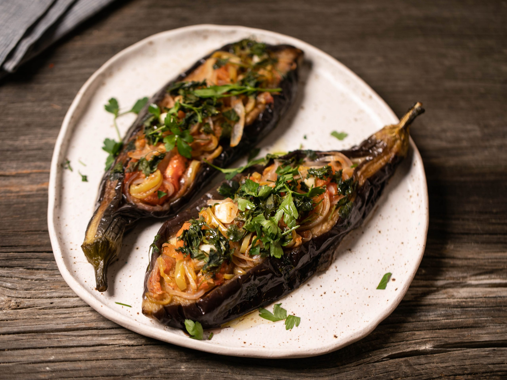

Imam Bayildi
Ingredients
- 4 medium sized aubergines
- 2 large onions peeled, halved & sliced into half moons
- 4 cloves garlic peeled and thinly sliced
- 1 handful parsley finely chopped, to garnish
- 2 large tomatoes or 1x400g tin tomatoes
Prep Time:
10 minutes
Instructions:
-
Use a vegetable peeler to peel stripes down your aubergines. Now take a
sharp knife and make a cut from the top to the bottom of each aubergine
without piercing through to the other side. Gently heat your sunflower
oil in a frying pan and add the aubergines. Turn them occasionally with
tongs so that they brown and soften on all sides. Be careful as they
will spit and sizzle in the hot oil. Once your aubergines have softened
after about 15 minutes, remove them from the pan and place on a baking
tray with the side where you made the cut facing upwards. Leave to one
side to cool.
-
In the same pan, add your olive oil and gently heat. Add your sliced
onions and peppers and sauté until the onions start to soften and turn
translucent. Now add your chopped tomatoes, garlic, paprika, salt and
pepper and mix together. Add a splash of water - about 50 mls - stir and
leave to simmer for 5-10 minutes.
-
Preheat your oven to 180 degrees Celsius. Meanwhile return to your
aubergines and carefully prise them open along the cut so that you have
four canoe shapes. Now add your filling to each aubergine with a
teaspoon - don't worry if some tumbles over the edge. It's all part of
the meal. Dissolve your tomato paste (salca) into approx 150 mls of
water and pour it over your aubergines and into the tray. Now place on
the middle shelf of your oven and cook for 15-20 minutes.
-
Remove from the oven and leave until your imam bayildi is warm or at
room temperature. Squeeze fresh lemon juice and sprinkle a little finely
chopped parsley over the top of your imam bayildi before serving. Serve
on its own or with accompaniments.
Back to Category Page